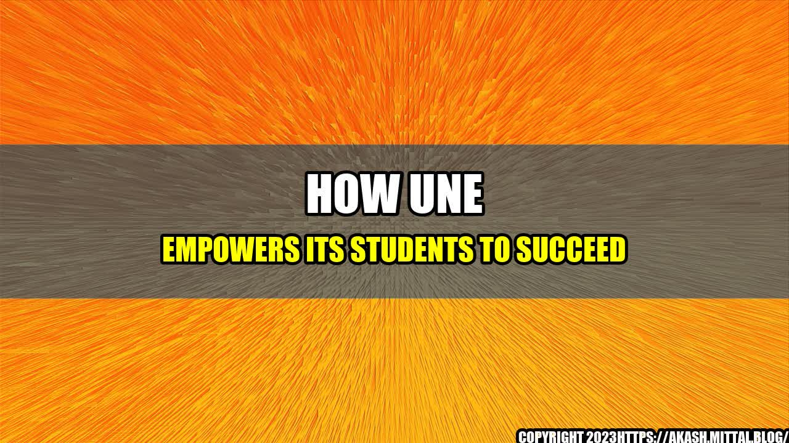

How UNE Empowers Its Students to Succeed
Attending college is an exciting and challenging time in a student's life. It is a time to learn, grow, and build a foundation for a successful future. The University of New England (UNE) is a school that is dedicated to empowering its students to succeed.
One student, Alex, came to UNE with a dream of becoming a nurse. However, she struggled with the science courses that were required for her major. Alex reached out to her academic advisor for help and was directed to the Student Success Center.
At the Student Success Center, Alex was matched with a peer tutor who was also a nursing major. The two worked together regularly, developing study strategies and reviewing material until Alex felt confident enough to take her exams. Thanks to the assistance of her tutor, Alex was able to succeed in her courses and graduate with honors.
UNE is committed to helping its students achieve their academic and career goals. Here are some statistics that demonstrate UNE's dedication to student success:
- Over 90% of UNE graduates are employed or pursuing further education within six months of graduation.
- UNE boasts a 4-year graduation rate of 64%, which is 20% higher than the national average.
- 93% of UNE students have at least one internship or experiential learning opportunity before graduation.
Practical Tips
Here are some tips from UNE to help students achieve academic and personal success:
- Take advantage of campus resources, such as the Student Success Center, tutoring services, and academic advisors.
- Get involved in clubs and organizations to find a sense of community and develop transferable skills.
- Take breaks and practice self-care to avoid burnout and maintain overall well-being.
Conclusion
Attending the University of New England is an opportunity to receive a top-notch education while also being supported by a community dedicated to your success. By taking advantage of UNE's resources and following the tips provided, students can achieve their academic and career goals and forge a path to a successful future.
- UNE graduates have a high employment rate and 4-year graduation rate above the national average.
- UNE provides resources and tips to help students achieve academic and personal success.
- UNE is dedicated to empowering its students to succeed.
Curated by Team Akash.Mittal.Blog
Share on Twitter Share on LinkedIn